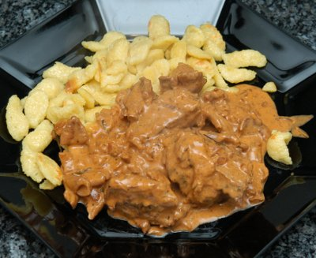

| Zutaten für 4 Personen: | |
| 600 g | Kalbfleisch, in Würfel geschnitten. |
| 1 EL | Gourmet Butter |
| 20 g | getrocknete Steinpilze |
| 2 | Zwiebeln |
| 1 | Knoblauchzehe |
| 1 EL | Tomatenpurée |
| Salz, Pfeffer | |
| Thymian | |
| Rosmarin | |
| 1/2 TL | Kümmel |
| 1 EL | Paprika, edelsüss |
| 6 EL | Weisswein |
| 1 Dose | Eierschwämme |
| 2 EL | Sauerrahm |
Garzeit: 60-70 Minuten
Stunden zuvor: Die Steinpilze in lauwarmem Wasser aufquellen lassen.
Zwiebel hacken und Knoblauch schälen.
Kalbfleisch, in Würfel geschnitten, ringsum in Butter anbraten.
Die grob gehackten Zwiebeln und den durchgepressten Knoblauch mit dem Tomatenpürée zum Fleisch geben und mit Salz, Pfeffer, Thymian, Rosmarin, Kümmel und Paprika würzen.
Zugedeckt bei kleiner Hitze 60 - 70 Minuten garen.
Nach 20 Minuten (T-50) die abgetropften Steinpilze dazugeben
Nach 40 Minuten (T-30) den Weisswein dazugeben.
10 Minuten vor dem Servieren die abgetropften Eierschwämme und den Sauerrahm beifügen.
Nicht mehr kochen lassen.
Mit Spätzli oder anderen Teigwaren servieren.
Pro Person: 299 Kalorien, 1251 Joule
Herbert Eigenmann, Code: RBP
Bewertung: Fein. RE 16.12.2000
Ausgezeichnet und hat den Gästen gut gemundet. RE 21.12.2009
@LINKBACK_TAG@ @WAKELOCK@